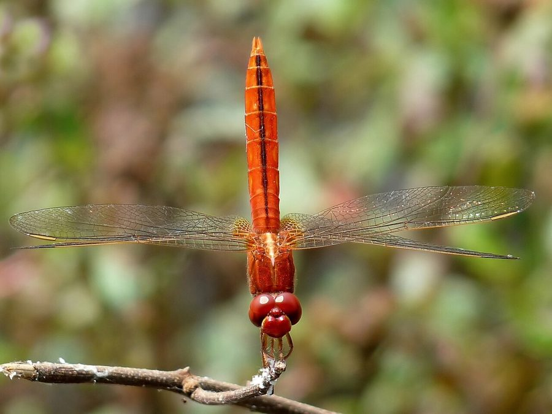

सिंदूरी व्याधपतंगScarlet Skimmer
Crocothemis servilia · Libellulidae · INS-0019

- Scientific name
- Crocothemis servilia (Drury, 1773)
- Family
- Libellulidae
- Hindi
- सिंदूरी व्याधपतंग
- Status here
- native
- IUCN
- LC
When to look कब देखें
Present all year.
सिंदूरी व्याधपतंग / Scarlet Skimmer
Crocothemis servilia (Drury, 1773) — Libellulidae
सिंदूरी व्याधपतंग — हमारे बगीचों, खेतों, तालाबों और सिंचाई नहरों के आसपास पाई जाने वाली एक अत्यंत सामान्य और चमकीले सिंदूरी-लाल रंग की मध्यम-बड़ी व्याधपतंग (dragonfly) है। इसके वयस्क नर का पूरा शरीर ( thorax और abdomen) गहरा सिंदूरी-लाल होता है, और इसकी पीठ पर एक पतली काली पट्टी होती है, जबकि मादा का रंग फीका पीला-भूरा होता है। यह एक अत्यंत आक्रामक और क्षेत्रीय (territorial) पक्षी की तरह व्यवहार करती है, जो अपने बैठने की जगह से उड़कर अन्य व्याधपतंगों को खदेड़ देती है। प्रदूषित जल और मानव-निर्मित जलाशयों में भी आसानी से प्रजनन करने के कारण यह पूरे दक्षिण एशिया में बहुत प्रचुर मात्रा में पाई जाती है।
Quick Identification त्वरित पहचान
| Feature | Description |
|---|---|
| Size | Medium to large-sized dragonfly (body length 36–45 mm; wingspan 50–70 mm) |
| Male Colour | Solid scarlet-red or blood-red abdomen; flatter and broader abdomen than other red species |
| Thorax | Crimson-red without any stripes; faint dark dorsal line along the top of the abdomen |
| Wings | Transparent with orange-yellow base; no dark bands or pinkish-purple hues |
| Behaviour | Perches on dry twigs, wires, and posts near water; actively chases intruders in a dash |
Field tip: Look for a medium-large, bright red dragonfly with a broad, somewhat flat abdomen perching in open sunny spots. Unlike the Crimson Marsh Glider, it has no pinkish or purple hues and is slightly larger and more robust.
Morphology आकारिकी
Biometrics (typical measurements in the northern Indian plains):
| Measurement | Range |
|---|---|
| Body length | 36–45 mm |
| Hindwing length | 23–33 mm |
| Wing span | 50–70 mm |
Adult description: The adult male has a bright red face and eyes, which meet broadly at the top of the head. The thorax and abdomen are a bright scarlet or crimson-red. A thin black mid-dorsal stripe runs along the top of the abdomen (segments 8–9). The wings are transparent with red veins and a small base patch of yellow-orange. The female is dull yellowish-brown with a pale dorsal stripe on the thorax, and her wings have clear veins and yellow basal washes.
Vocalisations
Odonates do not possess vocal organs and cannot produce true vocalisations.
- Sound production: Wing-whirring sounds are produced by rapid wingbeats during territorial disputes, pursuit of prey, or courtship maneuvers. The wing-beat frequency is approximately 30–35 Hz.
Behaviour & Ecology व्यवहार और पारिस्थितिकी
As a water quality indicator, Crocothemis servilia is a pollution-tolerant generalist. It can breed and thrive in slightly polluted, stagnant, or artificial water bodies such as concrete garden tanks and drainage ditches. It is an excellent indicator species for mapping rapid distribution changes in urban and agricultural wetland networks.
Larval (Naiad) Stage
The larval stage is aquatic, stout, and highly predatory.
- Body form and breathing: The naiad has a stout, rounded, mud-brown body with lateral spines on the abdomen for defense. It breathes through rectal tracheal gills, drawing water in and out of the hindgut.
- Habitat and duration: They live in muddy substrates, agricultural drains, and stagnant pond bottoms. The larval stage lasts for approximately 7–9 weeks.
- Emergence: Upon reaching maturity, the naiad climbs onto vertical weeds, rocks, or garden posts at night to emerge as an adult, drying its wings before taking flight at dawn.
Life Cycle / Phenology जीवन चक्र
- Egg: Laid by the female dipping her abdomen onto the water surface, often in stagnant pools or paddy fields.
- Larva: Tolerates high organic mud and feeds aggressively.
- Emergence: Peak emergence occurs from July to September during the wet monsoon season.
- Adult lifespan: Approximately 4–6 weeks.
- Seasonality: Present year-round, with high abundance and breeding activity during the rainy season.
Host Plants or Prey आहार
Prey (adults):
- Mosquitoes and midges
- Small moths and butterflies
- Leafhoppers and crop pests
Prey (larvae):
- Mosquito larvae
- Small water beetles
- Chironomid worms (bloodworms)
Predators / Natural Enemies शत्रु
- Birds: Insectivorous birds like drongos, rollers, and bee-eaters.
- Amphibians: Large tree frogs and pond frogs.
- Insects: Larger dragonflies and predatory water bugs.
Agricultural / Human Relevance कृषि प्रासंगिकता
Agricultural pest suppressor. They are highly beneficial in rice-growing tracts where they prey heavily on moths (such as leaf folders and stem borers) and mosquitoes. They adapt well to farm ponds and irrigation canals, acting as a natural pest suppressive force in agricultural fields.
Expected Locally स्थानीय रूप से अपेक्षित
Not a field record. Written from published accounts for eastern Uttar Pradesh. No confirmed local sighting yet — if you have seen it, that is what the atlas needs.
अभी तक स्थानीय पुष्टि नहीं। यह विवरण प्रकाशित स्रोतों से है, किसी अवलोकन से नहीं।
Very common throughout Basti district. They are regularly observed in home gardens, farming plots, and village ponds (talab). Males are highly territorial and can be seen perching on bamboo stakes, garden wires, and dry twigs, diving aggressively to chase away other insects. They are highly active during sunny hours near water.
Distribution वितरण
Global range: Widespread across South, East, and Southeast Asia, from Iran, Iraq, and Pakistan, through India, Nepal, and Bangladesh, to China, Japan, and Indonesia. It has also been introduced as an invasive species in Florida, USA.
In India: Abundant in plains and agricultural regions.
In Uttar Pradesh: Present state-wide in all districts.
In Basti district / eastern UP: Abundant in all home gardens, canals, and wetlands.
Research Questions शोध प्रश्न
Anyone can investigate these | कोई भी इन प्रश्नों की जाँच कर सकता है
- How do male Scarlet Skimmers react to other red-colored dragonflies that enter their territory? — Measure the distance at which they start a chase.
- What is the average duration of a perching session for males during peak sun hours? — Record perching vs. flying time.
- Do female skimmers prefer laying eggs in stagnant pools over slow-flowing channels? — Compare egg-laying frequency in different water bodies.
- How does pesticide spray affect the activity rate of adult skimmers in vegetable gardens? — Compare count trends before and after spray.
- How successfully do skimmers capture flying mosquitoes compared to flies? / मक्खियों की तुलना में सिंदूरी व्याधपतंग उड़ते हुए मच्छरों को पकड़ने में कितनी सफल होती है? — Count successful capture attempts on different prey.
Similar Species मिलती-जुलती प्रजातियाँ
| Species | Key Difference |
|---|---|
| INS-0015 Crimson Marsh Glider | Slightly smaller; pinkish-purple sheen on abdomen; purplish eyes; amber wing base |
| INS-0016 Ditch Jewel | Smaller; orange-yellow body; wings with prominent yellow-orange bands |
| INS-0002 Wandering Glider | Golden-yellow body; flies continuously; does not perch frequently |
Field rule: Medium-large size, uniform scarlet-red body with a flat, broad abdomen, thin black dorsal line, and lack of dark wing patches identify the Scarlet Skimmer.
Taxonomy & Classification वर्गीकरण
Original description. Dru Drury described the Scarlet Skimmer as Libellula servilia in 1773 in his work Illustrations of Natural History (Vol. 2, p. 83, Pl. 46, fig. 1). The type locality was China. The genus name Crocothemis was established by Friedrich Brauer in 1868, meaning "saffron-colored darter", and servilia is a Latin name, possibly referring to a Roman family name.
Subspecies. Two subspecies are recognized:
| Subspecies | Authority | Range | Notes |
|---|---|---|---|
| C. s. servilia | (Drury, 1773) | South and East Asia | UP subspecies; nominate form |
| C. s. mariannae | Kiauta, 1983 | Mariana Islands | Insular subspecies |
Family and order placement. Placed in the family Libellulidae, order Odonata.
Phylogenetic notes. Crocothemis servilia exhibits high geographic variation in color and size, leading to ongoing studies on regional genetic clades.
IUCN status rationale. Listed as Least Concern (LC). Extremely abundant and adaptable, with a stable population trend across its global range.
Photo Gallery फोटो गैलरी
References संदर्भ
- Drury, D. (1773). Illustrations of Natural History. White, London, Vol. 2, p. 83, Pl. 46, fig. 1. [original description]
- Fraser, F.C. (1936). The Fauna of British India, including Ceylon and Burma. Odonata. Vol. 3. Taylor and Francis, London.
- Prasad, M. & Varshney, R.K. (1995). A checklist of the Odonata of India. Oriental Insects, 29(1), 385-428.
- Mitra, T.R. (2002). Geographical distribution of Odonata (Insecta) of Eastern India. Zoological Survey of India, Kolkata.
- IUCN SSC Odonata Specialist Group. (2024). Crocothemis servilia. IUCN Red List of Threatened Species. Ver. 2024.
- GBIF Occurrence Data — Crocothemis servilia, Uttar Pradesh (2010–2025).
Source file: species/fauna/insects/scarlet_skimmer.md